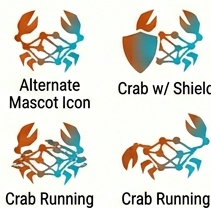

Say goodbye to the Python-C++ gap. FerricML is written entirely in Rust, from the high-level API down to the hardware kernels. Debug, profile, and optimize your entire stack in a single language.
Our AOT-AD engine symbolicly differentiates your models at compile-time. This eliminates runtime overhead and allows for global graph optimizations that dynamic frameworks simply can't match.
Leverage Rust's ownership model to eliminate memory leaks and data races. Our unique ShapeGuards prevent dimension mismatches before you even run your code.
Deploy with confidence using production-ready formats. We provide first-class support for GGUF (v3) and SafeTensors, ensuring your models are portable and secure.
Run your models in the browser with near-native speed. FerricML's lightweight runtime makes it the perfect choice for client-side AI.